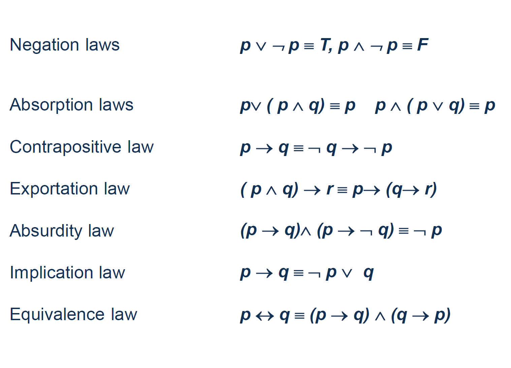
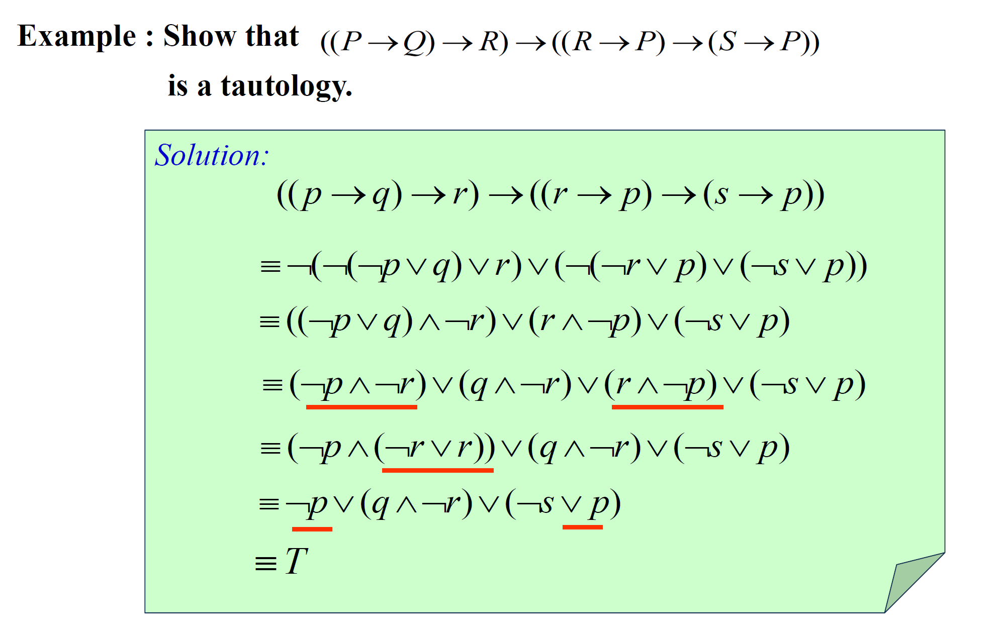
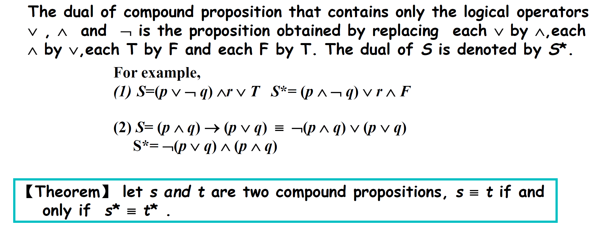

Part 01
Covering1.1 ~ 1.3
Proposition Logic 命题逻辑
Knowledge Frame 知识框架
- Proposition 命题
- Connectives 联结 (命题之间的关联)
- Negation (NOT) 否定
- Conjunction (AND) 合取
- Disjunction (OR) 析取
- Exclusive Or (XOR) 异或
- Implication (if-then) 蕴含
- Converse, Contrapositive, and Inverse 逆命题、逆否命题、否命题
- Biconditional (if and only if) 双条件
- Precedence 优先级
- Truth Table 真值表 (一个工具)
- Equivalent Propositions 等价命题
- Bit Operations 位运算
Proposition 命题
A proposition is a declarative sentence that is either true or false, but not both.
命题是一个陈述语句，它或真或假，但不能既真又假。
不是命题的几种典型反例
- command 命令 (e.g. Read it loud!)
- question 疑问 (e.g. What time is it?)
- paradox 悖论 (e.g. This statement is false.)
- equation with unknowns 含有未知数的等式 (e.g. x + y = z)
使用字母来表示命题变元(propositional variables)
Connectives 联结
Negation (NOT) 否定
The negation of a proposition p : ¬p (not p)
Conjunction (AND) 合取
The conjunction of propositions p and q : p ∧ q (p and q)
Note: The sun is shining , but it is raining.
自然语言和逻辑语言是有区别的，不要混为一谈。这一点在之后还会出现！
Disjunction (OR) 析取
The disjunction of propositions p and q : p ∨ q (p or q)
Exclusive Or (XOR) 异或
the exclusive or of p and q : p ⊕ q
(True when exactly one of p and q is true.)
Note: ∨ vs. ⊕
Inclusive or: ∨
Exclusive or: ⊕
Implication (if-then) 蕴含
Implication or conditional statement : p → q (if p, then q)
Note: 再次注意，自然语言和逻辑语言是有区别的，生活中的逻辑也不要强行带入
e.g. If the moon is made of green cheese, then I have more money than Bill Gates. 这句话的真值为T
Different Ways of Expressing p → q
大部分直接读读就知道了，但是有两个很坑
p only if q
q unless ¬p
思考它们的最佳办法就是带入一个实例
e.g. Mary will eat the fruit only if the fruit is apple.
p : Mary will eat the fruit
q : the fruit is apple
if (Mary will eat the fruit), then (the fruit is apple)
if p, then q
in English, not unless = only if
Converse, Contrapositive, and Inverse 逆命题、逆否命题、否命题
| p → q | Implication |
|---|---|
| q → p | Converse |
| ¬q → ¬p | Contrapositive |
| ¬p → ¬q | Inverse |
Biconditional (if and only if) 双条件
the biconditional proposition : p ↔ q (p if and only if q, p iff q, vice versa)
Precedence 优先级
| Operator | Precedence |
|---|---|
| ¬ | 1 |
| ∧ ∨ | 2 3 |
| → ↔ | 4 5 |
Truth Table 真值表
真值表是研究命题逻辑的重要工具
在构建真值表时，其实就是在手工模拟计算机枚举的过程
不难，仅以一题为例
An island has two kinds of inhabitants, knights, who always tell the truth, and knaves, who always lie. You go to the island and meet A and B.
A says “B is a knight.”
B says “The two of us are of opposite types.”
What are the types of A and B?
Let p: "A is a knight"
q: "B is a knight"
| p | q | p ↔ q | q ↔ p ⊕ q |
|---|---|---|---|
| T | T | T | F |
| T | F | F | F |
| F | T | F | T |
| F | F | T | T |
So the answer is that both A and B are knaves.
Equivalent Propositions 等价命题
Two propositions are equivalent if they always have the same truth value.
Two Related Problems
How many rows are there in a truth table with npropositional variables?
$2^n$
With n propositional variables, we can construct ( ) distinct (i.e., not equivalent) propositions
$2^{2^n}$
稍加解释一下，有n个命题变量时，真值表就有了$2^n$种情况，而每一个命题对于每一种情况，它都可以有T和F两个值（注意，如果两个命题在这$2^n$个情况之下真值完全相同，则它们被视为完全等价的两个命题，即在这里被算为一个）那么此时，就有了$2^{2^n}$种不同的真值组合，对应$2^{2^n}$种不同的命题
Bit Operations 位运算
- Bit: a symbol with two possible values , namely, 0 and 1.
- Boolean variable: one whose value is either true or false.
- A bit string is a sequence of zero or more bits
- Bitwise operations are bit operations extended to bit strings. （按位X）
Propositional Equivalences 命题等价式
Tautologies, Contradictions, and Contingencies 永真、永假、可能式
Tautologies 永真 （重言式）
A tautology is a proposition which is always true.
e.g. p ∨ ¬p
Contradictions 永假 （矛盾式）
A contradiction is a proposition which is always false.
e.g. p ∧ ¬p
Contingencies 可能式
A contingency is a proposition which is neither a tautology nor a contradiction, such as p
Logical Equivalences 逻辑等价式
The compound propositions p and q are called logically equivalent if p ↔ q is a tautology.
Notation 记号
p ⇔ q or p ≡ q
Remark
The symbol ≡ is not a logical connective, and p ≡ q is not a compound proposition but rather is the statement that p ↔ q is a tautology.
Laws 一些等价定律
De Morgan’s Laws 德·摩根律
¬(p ∧ q) ≡ ¬p ∨ ¬q
¬(p ∨ q) ≡ ¬p ∧ ¬q
The Extended Version of De Morgan’s Laws 德·摩根律拓展形式
$\neg(p_1\wedge p_2\wedge ...\wedge p_n)\equiv \neg p_1\vee \neg p_2\vee ...\vee \neg p_n$
$\neg(p_1\vee p_2\vee ...\vee p_n)\equiv \neg p_1\wedge \neg p_2 \wedge ...\wedge \neg p_n$
We will sometimes use the notation $\bigvee{j = 1}^{n} p_j$ for $p_1 \vee p_2 \vee ... \vee p_n$ and $\bigwedge{j = 1}^n pj$ for $p_1 \wedge p_2 \wedge ... \wedge p_n$. Using this notation, the extended version of De Morgan's laws can be written concisely as $\lnot (\bigvee{j = 1}^n pj) \equiv \bigwedge{j = 1}^n pj$ and $\lnot (\bigwedge{j = 1}^n pj) \equiv \bigvee{j = 1}^n \lnot p_j$. (Methods for proving these identities will be given in Section 5.1)
Key Logical Equivalences 重要的逻辑等价式
| Name | Equivalences |
|---|---|
| Identity laws | $p \wedge T \equiv p, p \vee F \equiv p$ |
| Domination laws | $p \vee T \equiv T, p \wedge F \equiv F$ |
| Idempotent laws | $p \vee p \equiv p, p \wedge p \equiv p$ |
| Double negation law | $\lnot \lnot p \equiv p$ |
| Commutative laws | $p \vee q \equiv q \vee p, p \wedge q \equiv q \wedge p$ |
| Associative laws | $(p \vee q) \vee r \equiv p \vee (q \vee r), (p \wedge q) \wedge r \equiv p \wedge (q \wedge r)$ |
| Distributive laws | $p \vee (q \wedge r) \equiv (p \vee q) \wedge (p \vee r), p \wedge (q \vee r) \equiv (p \wedge q) \vee (p \wedge r)$ |
| De Morgan's laws | $\lnot (p \wedge q) \equiv \lnot p \vee \lnot q, \lnot (p \vee q) \equiv \lnot p \wedge \lnot q$ |

Constructing New Logical Equivalences 构建新的逻辑等价式
Using Truth Tables
Easy but time-consuming when the number of variables is large
Using already-proved equivalences
Just like what we do in Algebra
推理逻辑的基础——传递性
$A_1\equiv A_2$
$A_2\equiv A_3$
……
$A_{n-1}\equiv A_n$
Samples of Equivalence Proofs


Propositional Satisfiability 命题的可满足性
A compound proposition is satisfiable if there is an assignment of truth values to its variables that make it true. (成真赋值)
When no such assignments exist, the compound proposition is unsatisfiable.
Application
Sudoku 数独 详见书本
Others 其他
Other Logical Operators
Sheffer stroke | （Sheffer 竖）
p | q ≡ ¬(p ∧ q) NAND 与非
Peirce arrow ↓ （Peirce 箭头）
p ↓ q ≡ ¬(p ∨ q) NOR 或非
p ↓ p ≡ ¬p
(p ↓ q) ↓ (p ↓ q) ≡ p ∨ q
The Dual of a Compound Proposition 对偶

Functionally Complete Collection of Logical Operators 功能完备的逻辑连接词集合
A collection of logical operators is called functionally complete if every compound proposition is logically equivalent to a compound proposition involving only these logical operators.
e.g. {¬, ∧, ∨, →, ↔}, {¬, ∧, ∨}, {¬, ∧}, {¬, ∨}, {|}, {↓} are all functionally complete operators